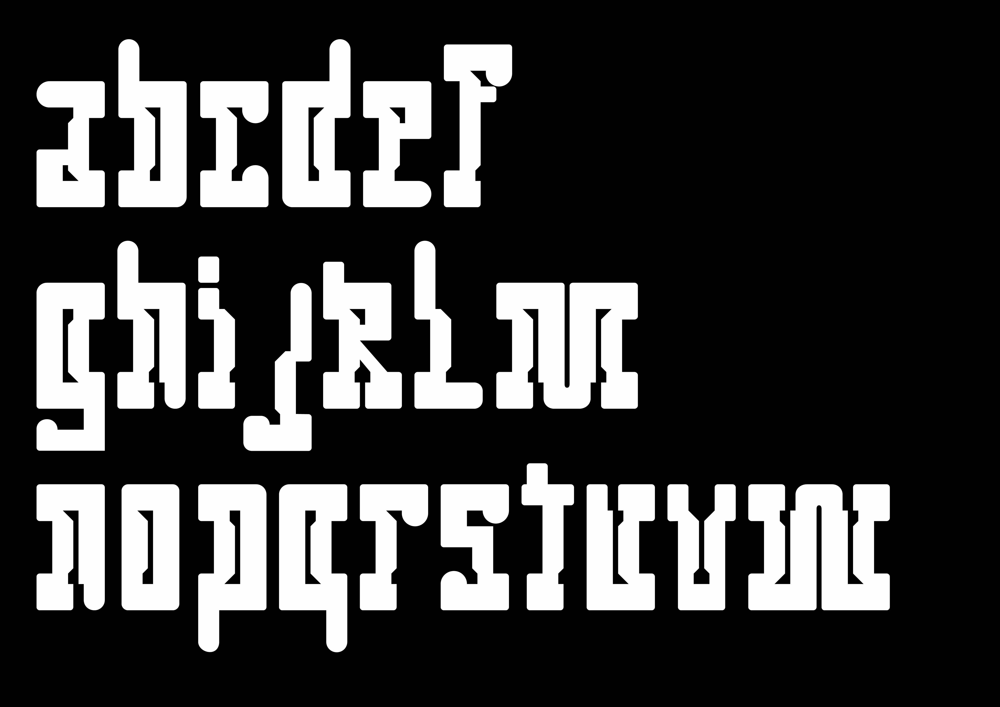
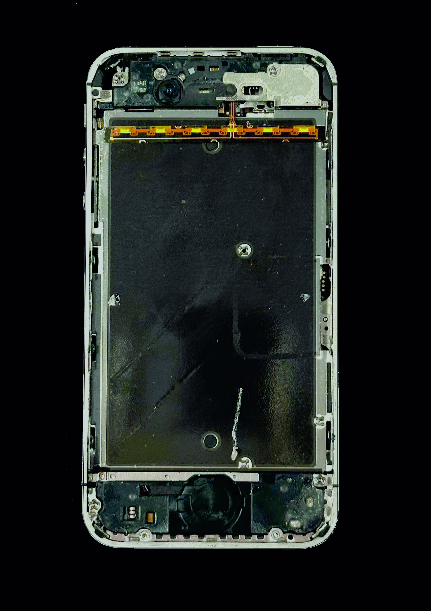
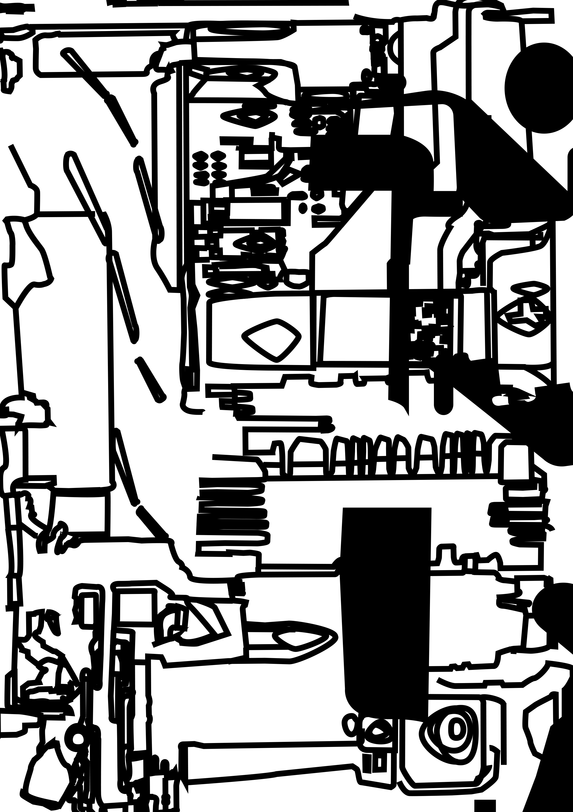
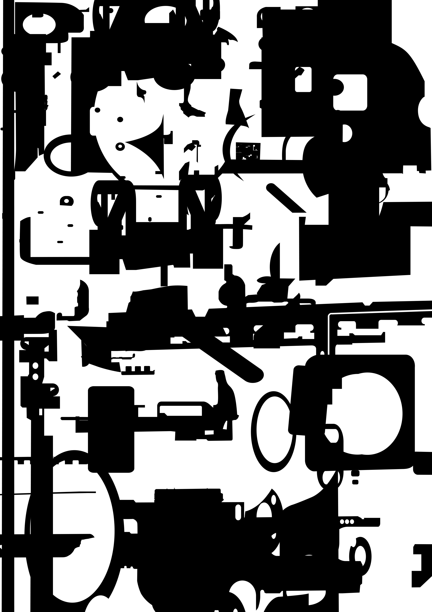
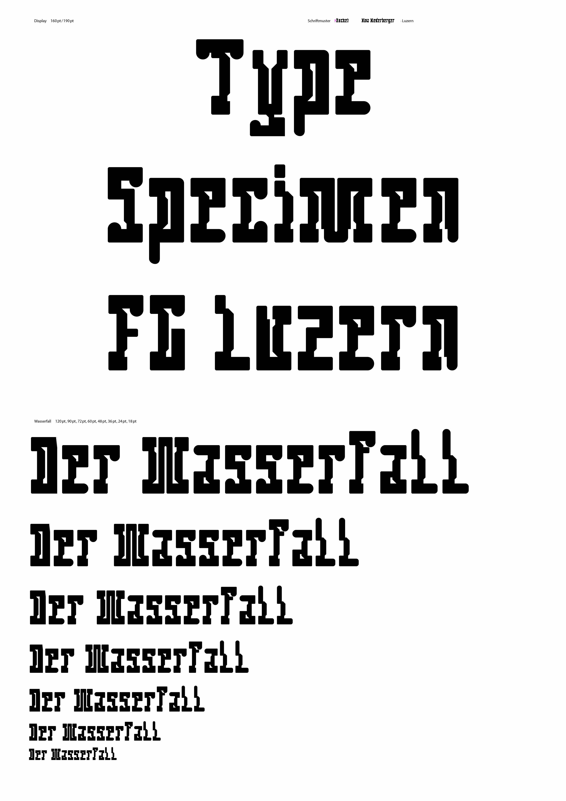
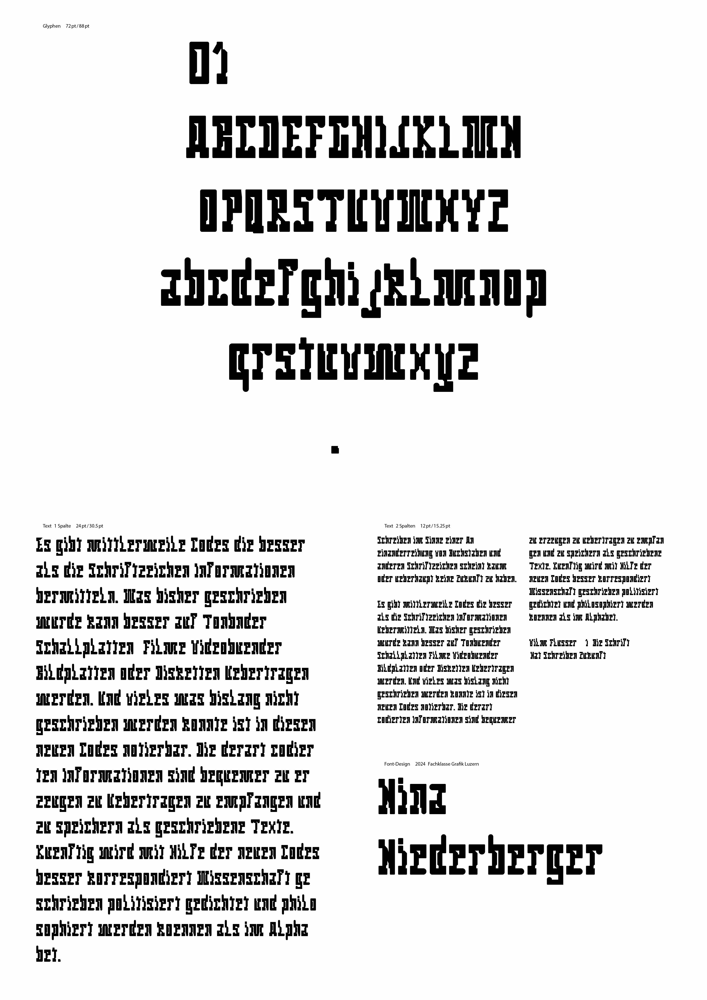

Font Design
2023

Wie lassen sich Zeilenabstand und Durchschuss so darstellen, dass auch Menschen, die noch nie davon gehört haben, diese Begriffe verstehen können? Aus dieser Frage entstand mein Ziel: ein Layout zu gestalten, das die Theorie visuell begreifbar macht. Nach intensiver Recherche, einem umfassenden Entwurfsprozess und vielen Ideen entstand das Endprodukt: eine klar aufgebaute Magazin-Doppelseite. Durch den gezielten Einsatz der Farbe Rot werden Zeilenabstand und Durchschuss deutlich hervorgehoben. Typografie wird so nicht nur erklärt, sondern sichtbar gemacht.




